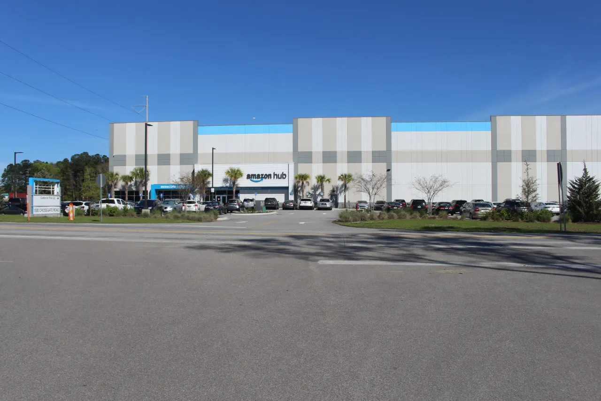

아마존 주식은 AWS만 보면 절반만 읽게 됩니다. AWS는 여전히 높은 이익률을 가진 핵심 사업이지만, 아마존 전체 매출과 현금흐름에는 리테일과 광고, 물류 효율이 크게 들어갑니다. 클라우드 성장률이 좋아도 리테일 마진이 다시 흔들리면 주가는 쉽게 재평가되지 않습니다.
아마존의 강점은 여러 사업이 서로 연결된다는 점입니다. 프라임 회원은 배송 빈도를 만들고, 배송 빈도는 광고 지면을 키우며, 광고는 리테일 마진을 보완합니다. AWS는 기업 고객의 디지털 인프라를 맡고, AI 수요는 클라우드 투자 이야기를 다시 키웁니다. 문제는 이 연결이 비용을 먹는 방식으로도 작동한다는 점입니다.
투자자는 AWS 성장률, 광고 매출, 북미 리테일 영업이익률, 물류 투자 부담을 한꺼번에 봐야 합니다. 아마존은 매출이 큰 회사가 아니라 비용을 통제할 때 이익이 크게 튀는 회사입니다.
AWS는 성장률보다 이익률입니다

AI 수요는 AWS 매출을 키우지만 데이터센터 투자도 함께 늘립니다.
클라우드 고객의 최적화 압력이 커지면 매출 성장률과 마진이 동시에 흔들릴 수 있습니다.
AWS 영업이익이 전체 회사 이익의 기준선 역할을 하는지 확인해야 합니다.
이 대목에서는 숫자 하나를 따로 떼어 보지 않는 편이 좋습니다. AI 수요는 AWS 매출을 키우지만 데이터센터 투자도 함께 늘립니다. 클라우드 고객의 최적화 압력이 커지면 매출 성장률과 마진이 동시에 흔들릴 수 있습니다. AWS 영업이익이 전체 회사 이익의 기준선 역할을 하는지 확인해야 합니다. 이 흐름이 다음 분기에도 이어지는지 확인하면 뉴스의 크기와 실제 투자 가치 사이의 간격을 줄일 수 있습니다.
리테일 마진은 물류에서 나옵니다
관련 영상
아마존 AWS와 리테일 마진을 함께 보는 실적 분석
배송망이 촘촘해질수록 고객 만족은 좋아지지만 고정비 부담도 커집니다.
지역별 물류 재배치와 자동화가 단위 배송비를 낮추면 리테일 사업의 평가가 달라집니다.
매출 성장보다 주문당 비용과 재고 회전율이 더 중요한 분기들이 있습니다.
리테일 마진은 물류에서 나옵니다을 볼 때는 숫자 하나를 따로 떼어 보지 않는 편이 좋습니다. 배송망이 촘촘해질수록 고객 만족은 좋아지지만 고정비 부담도 커집니다. 지역별 물류 재배치와 자동화가 단위 배송비를 낮추면 리테일 사업의 평가가 달라집니다. 매출 성장보다 주문당 비용과 재고 회전율이 더 중요한 분기들이 있습니다. 이 흐름이 다음 분기에도 이어지는지 확인하면 뉴스의 크기와 실제 투자 가치 사이의 간격을 줄일 수 있습니다.
광고는 숨은 이익 엔진입니다
아마존 광고는 구매 직전의 검색 의도를 잡기 때문에 이익률이 높습니다.
판매자 경쟁이 치열할수록 광고 단가가 올라가지만 판매자 수익성은 압박받습니다.
광고 성장은 리테일 마진 회복을 돕지만 플랫폼 신뢰와 규제 이슈를 함께 봐야 합니다.
이 대목에서는 숫자 하나를 따로 떼어 보지 않는 편이 좋습니다. 아마존 광고는 구매 직전의 검색 의도를 잡기 때문에 이익률이 높습니다. 판매자 경쟁이 치열할수록 광고 단가가 올라가지만 판매자 수익성은 압박받습니다. 광고 성장은 리테일 마진 회복을 돕지만 플랫폼 신뢰와 규제 이슈를 함께 봐야 합니다. 이 흐름이 다음 분기에도 이어지는지 확인하면 뉴스의 크기와 실제 투자 가치 사이의 간격을 줄일 수 있습니다.
소비 둔화가 시험대입니다
경기가 둔화되면 소비자는 고가 상품보다 생필품과 할인 상품에 더 집중합니다.
객단가가 낮아지면 배송비 부담이 다시 커질 수 있습니다.
아마존은 가격 경쟁력과 배송 속도를 동시에 유지해야 방어력이 생깁니다.
이 대목에서는 숫자 하나를 따로 떼어 보지 않는 편이 좋습니다. 경기가 둔화되면 소비자는 고가 상품보다 생필품과 할인 상품에 더 집중합니다. 객단가가 낮아지면 배송비 부담이 다시 커질 수 있습니다. 아마존은 가격 경쟁력과 배송 속도를 동시에 유지해야 방어력이 생깁니다. 이 흐름이 다음 분기에도 이어지는지 확인하면 뉴스의 크기와 실제 투자 가치 사이의 간격을 줄일 수 있습니다.
주가는 세 사업의 합입니다
AWS에는 클라우드 프리미엄, 광고에는 플랫폼 프리미엄, 리테일에는 효율성 프리미엄이 붙습니다.
세 프리미엄이 동시에 유지될 때 아마존의 밸류에이션이 강해집니다.
한 축만 좋아지는 실적은 단기 호재가 될 수 있지만 장기 재평가에는 부족합니다.
이 대목에서는 숫자 하나를 따로 떼어 보지 않는 편이 좋습니다. AWS에는 클라우드 프리미엄, 광고에는 플랫폼 프리미엄, 리테일에는 효율성 프리미엄이 붙습니다. 세 프리미엄이 동시에 유지될 때 아마존의 밸류에이션이 강해집니다. 한 축만 좋아지는 실적은 단기 호재가 될 수 있지만 장기 재평가에는 부족합니다. 이 흐름이 다음 분기에도 이어지는지 확인하면 뉴스의 크기와 실제 투자 가치 사이의 간격을 줄일 수 있습니다.
아마존은 AWS 기업이면서 리테일 기업이고 광고 기업입니다. 그래서 한 지표만으로는 설명이 부족합니다. AWS 성장률이 둔화돼도 마진이 강하면 버틸 수 있고, 리테일 매출이 평범해도 물류 효율과 광고가 좋아지면 이익이 크게 개선될 수 있습니다.
투자자는 다음 실적에서 AWS 영업이익률, 북미 리테일 영업마진, 광고 성장률, 설비투자 증가 속도를 같은 표에 놓아야 합니다. 아마존 주식의 핵심은 매출 규모가 아니라 비용 구조가 얼마나 가볍게 바뀌고 있는지입니다.
개별 기업 투자는 기업의 경쟁력만큼 기대치가 중요합니다. 좋은 기업도 이미 높은 가격을 받고 있으면 다음 분기 실적이 조금만 흔들려도 주가가 크게 반응할 수 있습니다. 그래서 매출 성장률과 함께 마진, 잉여현금흐름, 자사주 매입 여력, 고객 집중도를 함께 봐야 합니다.
달러 기준 수익률과 원화 기준 수익률도 나눠 보아야 합니다. 환율이 투자 결과를 보태 주는 시기도 있지만, 신규 매수 가격을 높이는 시기도 있습니다. 종목 판단과 환전 판단을 분리하면 의사결정이 더 선명해집니다.
마지막으로 전자상거래 글을 읽을 때는 가격이 먼저 움직인 뒤 이유가 붙는 경우가 많다는 점을 기억해야 합니다. 투자자는 결론을 서둘러 정하기보다 공식 자료, 최근 실적, 현금흐름, 밸류에이션, 시장 기대가 서로 같은 방향인지 차분히 확인하는 편이 좋습니다.
개별 기업 투자는 기업의 경쟁력만큼 기대치가 중요합니다. 좋은 기업도 이미 높은 가격을 받고 있으면 다음 분기 실적이 조금만 흔들려도 주가가 크게 반응할 수 있습니다. 그래서 매출 성장률과 함께 마진, 잉여현금흐름, 자사주 매입 여력, 고객 집중도를 함께 봐야 합니다.
달러 기준 수익률과 원화 기준 수익률도 나눠 보아야 합니다. 환율이 투자 결과를 보태 주는 시기도 있지만, 신규 매수 가격을 높이는 시기도 있습니다. 종목 판단과 환전 판단을 분리하면 의사결정이 더 선명해집니다.
마지막으로 투자 글을 읽을 때는 가격이 먼저 움직인 뒤 이유가 붙는 경우가 많다는 점을 기억해야 합니다. 투자자는 결론을 서둘러 정하기보다 공식 자료, 최근 실적, 현금흐름, 밸류에이션, 시장 기대가 서로 같은 방향인지 차분히 확인하는 편이 좋습니다.
이 글의 목적은 정답을 대신 내려 주는 것이 아니라 확인 순서를 줄이는 데 있습니다. 관심 종목이나 상품이 있다면 같은 기준을 표로 옮겨 적고, 다음 실적 발표 때 실제 숫자가 어떻게 변했는지 다시 비교해 보는 방식이 가장 안전합니다.
테마형 기업 투자는 좋은 기업을 찾는 일과 좋은 가격을 기다리는 일이 분리돼야 합니다. 기업의 경쟁력이 높아도 시장 기대가 이미 지나치게 올라가 있으면 실적 발표 후 주가가 흔들릴 수 있습니다. 그래서 매출 성장, 이익률, 현금흐름, 밸류에이션을 같은 표에서 확인해야 합니다.
환율도 따로 기록하는 편이 좋습니다. 달러 강세가 보유 수익률을 높여 주는 시기에는 신규 매수 부담이 같이 커질 수 있습니다. 반대로 달러가 약해질 때는 기업 주가가 올라가도 원화 기준 수익률이 줄어들 수 있습니다.
기업 발표를 읽을 때는 경영진의 단어 변화도 중요합니다. 강한 수요, 정상화, 최적화, 비용 절감 같은 표현이 어떤 맥락에서 나오는지 보면 다음 분기 기대가 높아지는지 낮아지는지 더 잘 보입니다.
또 하나 중요한 점은 기록입니다. 관심 있는 종목이나 상품을 볼 때 오늘의 판단 근거를 짧게 남겨 두면 다음 실적 발표나 시장 변화가 왔을 때 생각이 어떻게 달라졌는지 확인할 수 있습니다. 이 기록은 매수와 매도보다 먼저 투자 습관을 안정시키며, 같은 실수를 반복하지 않게 도와줍니다.
작은 차이를 확인하는 습관이 쌓이면 같은 뉴스에서도 더 침착하게 판단할 수 있습니다.